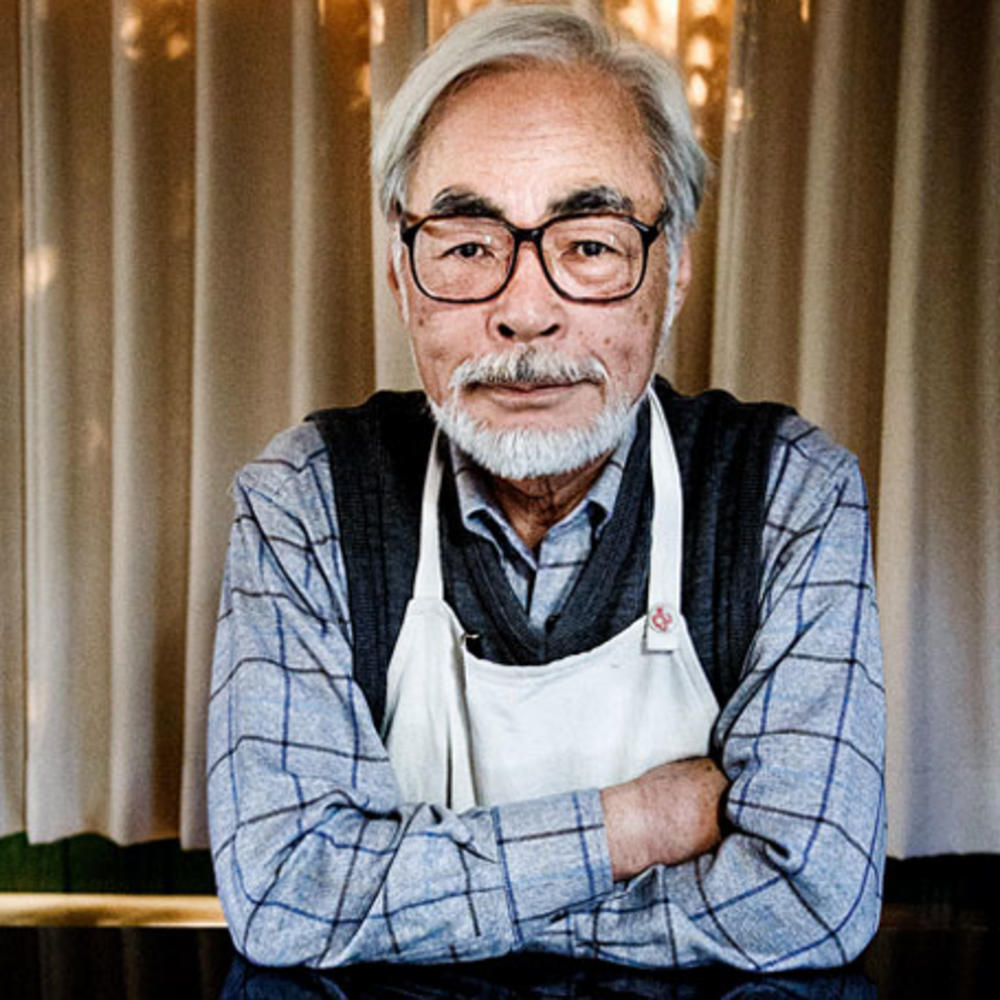
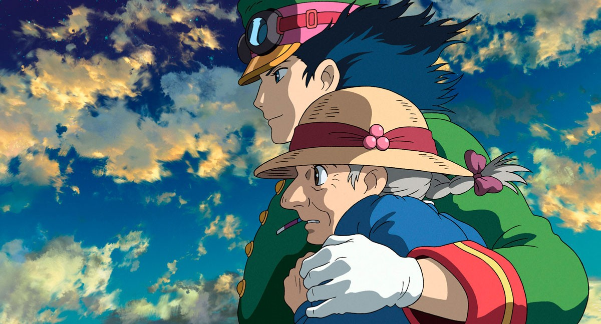
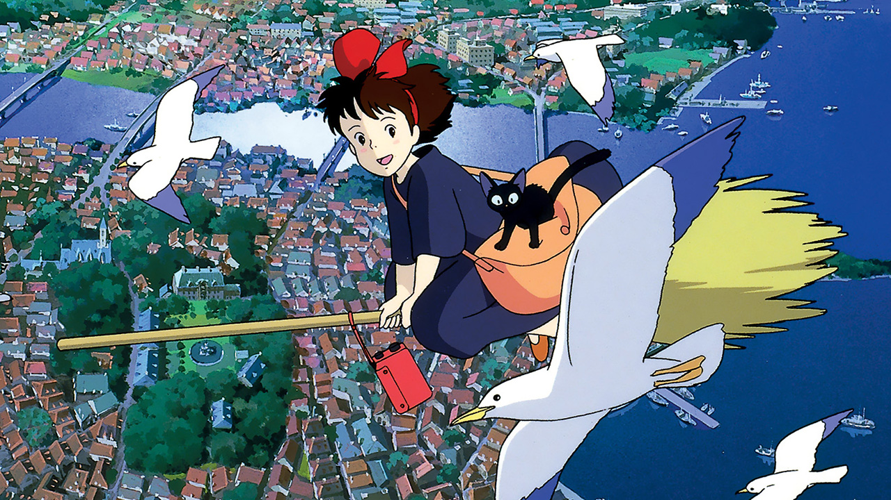
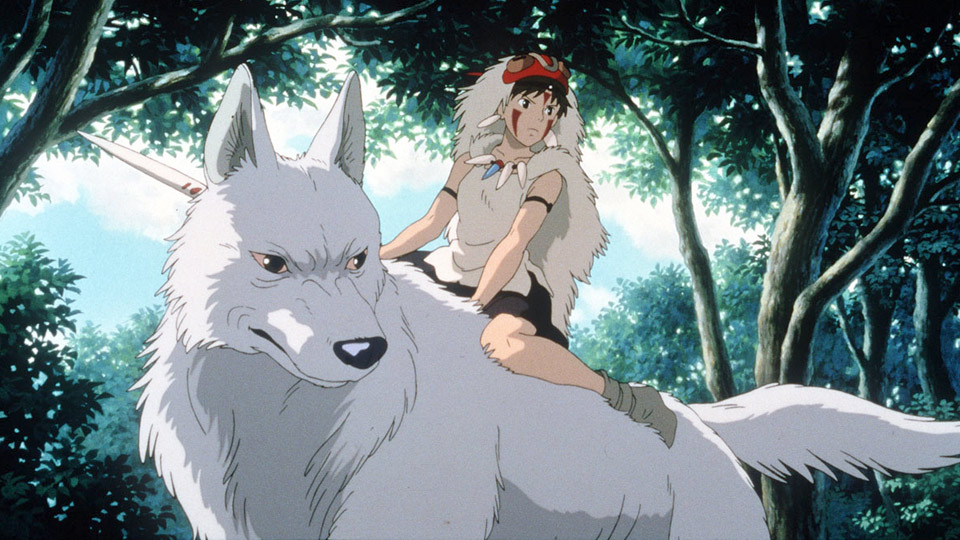
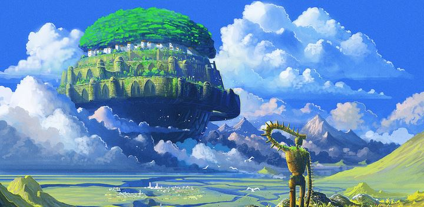
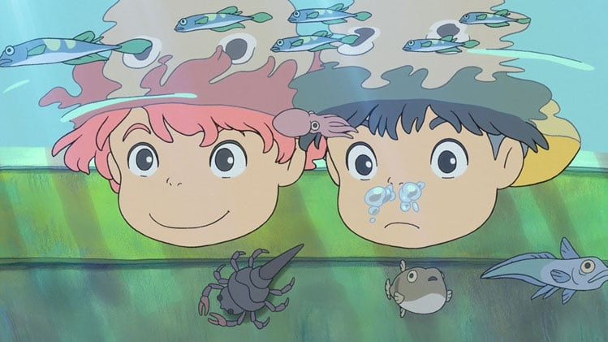
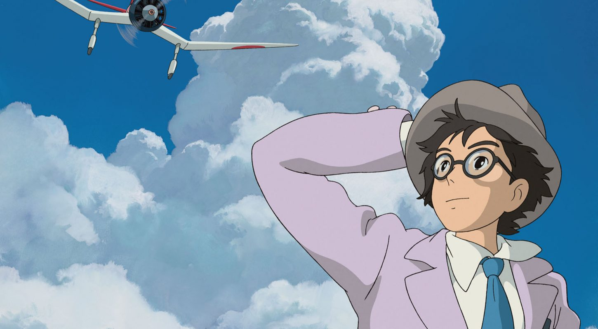

<html lang="fr" class="html" x-data="{MenuIsOpen: false}" style="--marge:1rem">

</html>>

<head>
    <meta charset="UTF-8">
    <meta http-equiv="X-UA-Compatible" content="IE=edge">
    <meta name="viewport" content="width=device-width, initial-scale=1.0">
    <title>Mon Nindo</title>
    <link rel="stylesheet" href="../src/css/style.css" rel="stylesheet" href="../src/css/fonts/font.css">
    <script defer src="https://unpkg.com/alpinejs"></script>
</head>


<body style="margin: 0 1rem">
    <header class="header">

        <div id="start">

            
            <a href="indexENG.html"> </a>
        </div>

        <div id="end" class="Menu">

            <button aria-controls="MenuPrincipal" @click="MenuIsOpen= !MenuIsOpen">
                
            </button>

            <nav id="MenuPrincipal" x-show="MenuIsOpen" x-transition.duration.800ms>
                <div class="MenuUl">
                    <ul>
                        <p class="Hiro" style="margin-left: 90px;"> ARTICLES</p>

                        <li style="font-size: 24px; margin-bottom:15px;margin-top: 50px;"><a
                                href="NarutoENG.html">Naruto</a> </li>
                        <li style="font-size: 24px;margin-bottom:15px;"><a href="MikiENG.html">Miki Matsubara</a></li>
                        <li style="font-size: 24px;margin-bottom:15px;"><a href="VoyageDeChihiroENG.html">Voyage de
                                Chihiro</a>
                        </li>
                        <li style="font-size: 24px;margin-bottom:15px;"><a href="KyotoENG.html">Kyoto</a></li>
                        <li style="font-size: 24px;margin-bottom:15px;"><a href="MangakasENG.html">Conditions de vie des
                                Mangakas</a></li>
                        <li style="font-size: 24px;margin-bottom:15px;"><a href="StéréotypesENG.html">Stéréotypes
                                japonais</a></li>

                </div>

                <div class="MenuUl">
                    <ul class="Menu2">
                        <P class="Hiro" style="margin-left: 50px;padding-left: 30; ">SECONDAIRES</P>
                        <li style="font-size: 20px; margin-bottom:50px; padding-top: 25px;"><a
                                href="ProjetsENG.html" style="padding-left:5px">Autres
                                Projets</a></li>
                        <li style="font-size: 20px; margin-bottom:50px;  padding-top: 25px;margin-right: 25px;"><a href="GlossaireENG.html"
                                style="padding-left:5px">Glossaire</a></li>
                        <li style="font-size: 20px; margin-bottom:50px;"><a href="ContactENG.html" style="padding-left:5px">Contact</a></li>
                        <li style="font-size: 20px; margin-bottom:50px;margin-right: 25px;"><a href="AProposENG.html"
                                style="padding-left:5px">A Propos</a></li>
                    </ul>
                </div>
            </nav>
        </div>

    </header>

    <h1 class="center" style="margin-bottom:50px ;"> Le Legende Hayao Miyazaki</h1>

    <div class="gallery">
        
    </div>

    <p class="Marge">Hayao MIYAZAKI, c’est 53 ans de carrière
        37 films et séries pour 3 prix. Voici 7 autres oeuvres du légendaire réalisateur japonais.
    </p>

    <a href="https://fr.wikipedia.org/wiki/Hayao_Miyazaki"
        style="color: #63120F;text-decoration:underline; text-align: center;">
        <p class="Marge">Voir sa biographie complète</p>
    </a>

    <h2> Ses principales oeuvres</h2>

    <h3>Le chateau ambulant</h3>

    <div class="gallery">
        
    </div>


    <P class="Marge">Le Château ambulant (Hauru no ugoku shiro) s'agit d'une adaptation du roman de Diana Wynne
        Jones,
        Le film, sortie en
        2006, attire au Japon 14 millions de spectateurs et 1,2 million en France et recevra le Prix du public et
        nomination au
        prix du meilleur film ainsi que le Prix de la meilleure bande originale de film. Il sera aussi nominé à
        l’oscar
        du
        meilleur film d’animation</P>

    <h3>Kiki la petite sorcière</h3>

    <div class="gallery">
        
    </div>

    <P class="Marge">Kiki la petite sorcière, sortie en 1989 (Majo no takkyūbin, littéralement Le service de livraison
        rapide de la sorcière)
        est le cinquième film d’animation du réalisateur japonais Hayao Miyazaki. Il s’agit de l’adaptation d’un livre
        japonais
        pour enfants d’Eiko Kadono paru en 1985, il recevra la médaille d’or japonaise</P>

    <h3>Totoro</h3>

    <div class="gallery">
        
    </div>

    <p class="Marge">Mon voisin Totoro (Tonari no Totoro) sortie en 1988 réalisera 800 000 entrées en cinq semaines
        d'exploitation. Il fait
        partie de la liste du BFI des 50 films à voir avant d'avoir 14 ans établie en 2005 par le British Film
        Institute. Il
        fait également partie des 250 meilleurs films selon le site IMDb. Totoro deviendra l’emblemes des studios
        Ghibli.</p>

    <h3>Princesse Mononoke</h3>

    <div class="gallery">
        
    </div>

    <p class="Marge">Princess Mononoke (Hepburn : Mononoke - hime) est un film d'animation historique fantastique épique
        de 1997. Princess Mononoke a été le film japonais le plus rentable de 1997, gagnant 11,3 milliards de yens en
        revenus de location
        de distribution, au niveau international il a gagnera un total de 11 millions de dollars</p>

    <h3>Le chateau dans le ciel</h3>

    <div class="gallery">
        
    </div>

    <p class="Marge">Le Château dans le ciel ( Tenkū no shiro Rapyuta) sortie en 1986 au Japon ne sera distribuer en
        Francequ’en 2003
        raison de la petite distribution que proposait le studio Ghibli à l'époque. Il fera 615 300 entrée en France et
        800
        milles au Japon.
        Le mélange des thèmes action-aventure et techno-écologie a depuis permis à l’œuvre de gagner ses galons de film
        culte.</p>

    <h3>Ponyo sur la falaise</h3>

    <div class="gallery">
        
    </div>

    <p class="Marge">Ponyo sur la falaise (Gake no ue no Ponyo) sortit en 2008 est le neuvième film que Miyazaki réalise
        au sein du studio
        Ghibli. Un mois après sa sortie, le film a été vu par 8,43 millions de personnes au Japon, engrangeant plus de
        10 milliards de yens de recettes. Pour un total de 16 millions d’entrée à l’international.</p>

    <h3>Le vent se lève</h3>

    <div class="gallery">
        
    </div>

    <p class="Marge">Le vent se lève (Kaze tachinu) sorti au Japon le 20 juillet 2013. MLe président du studio Ghibli,
        annonca que Le vent se
        lève sera le dernier film d'Hayao Miyazaki qui prend sa retraite du cinéma, même si le cinéaste revint sur sa
        décision en 2016. Il est le film ayant rapporté la plus grosse recette au Japon en 2013 pour un total de 13
        millions de
        yen</p>

    <div class="gallery2" style="margin-top:60px;">
        
        
        
        
    </div>

</body>

<footer style="margin: 0 -1rem">

    <div class="footer">
        <p style="padding-top:10px ;">Projet réalisé dans le cadre d’un exercice
            pédagogique au département <br> <a href="http://mmimontbeliard.com/" style="text-decoration:underline">MMi
                de Montbéliard</a> </br></p>
        <p> Ayrton chaves</p>
    </div>

    <div class="gallery2" style="padding-bottom: 15px;">
        <a href="https://www.instagram.com/ayrton.chvs/">  </a>
        <a href="https://twitter.com/ayrt_chvs">  </a>
    </div>

</footer>